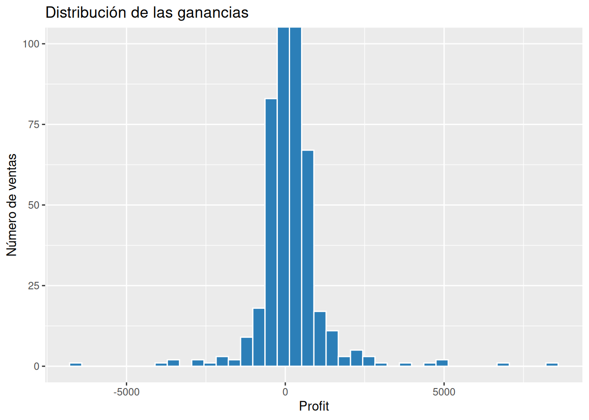
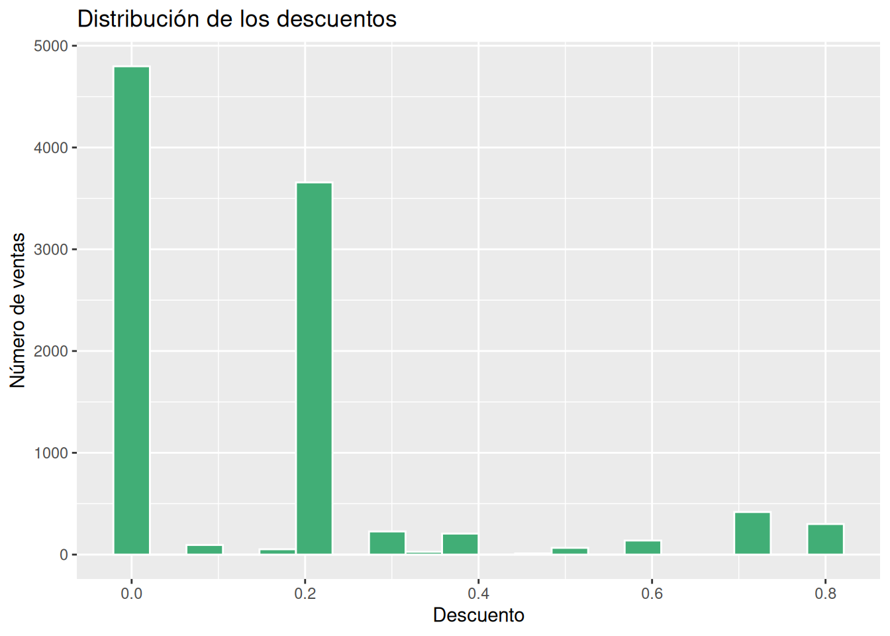
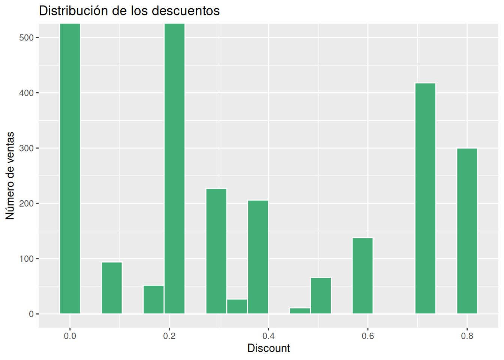
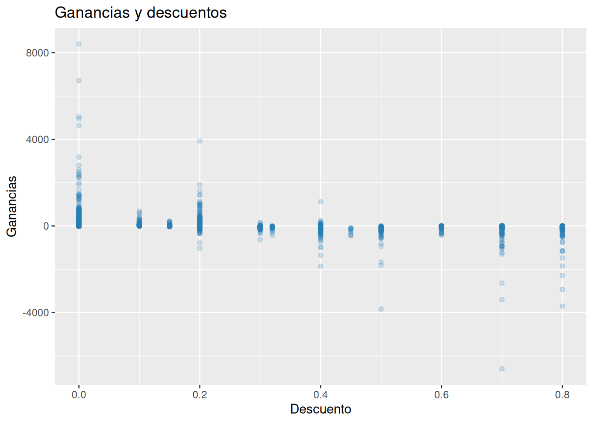
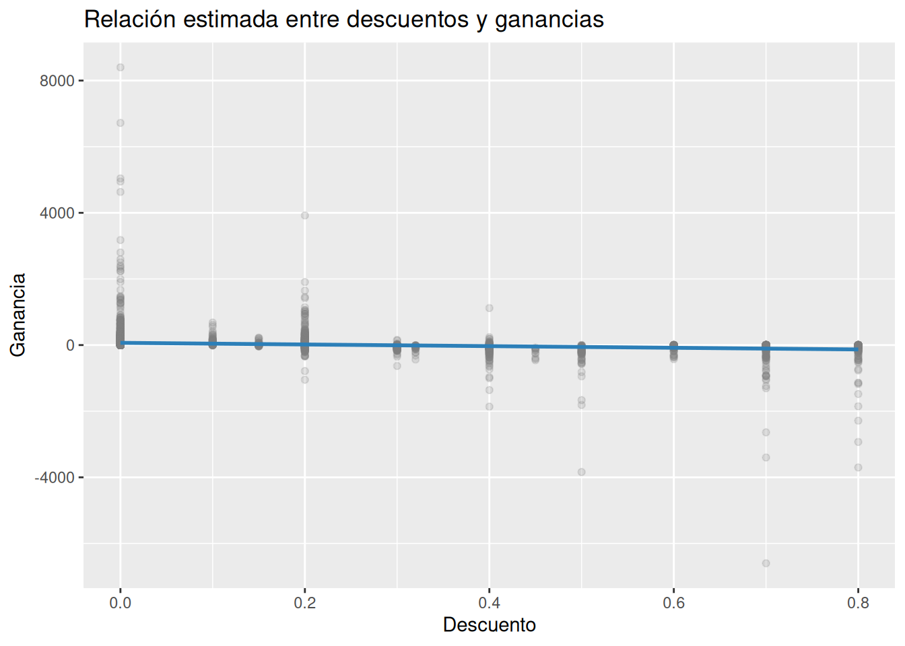
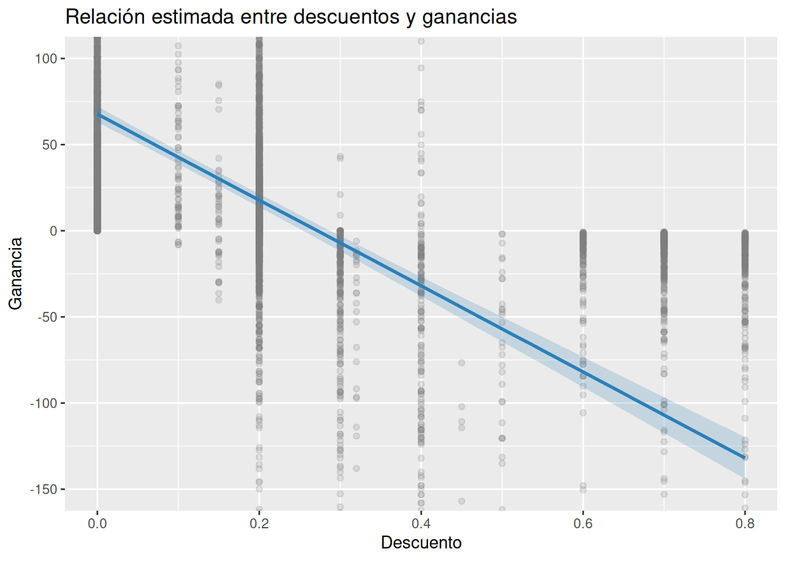
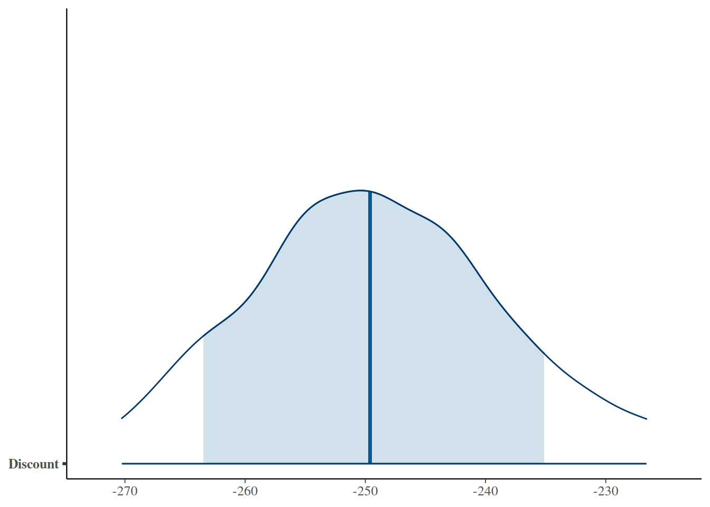

¿Los descuentos están reduciendo nuestras ganancias?
Retail
Finanzas
Analizamos cómo los descuentos se relacionan con la rentabilidad utilizando regresión lineal bayesiana sobre el conjunto de datos Superstore Sales.
¿Los descuentos están reduciendo nuestras ganancias?
La pregunta de negocio
Los descuentos forman parte de la estrategia comercial de prácticamente todas las empresas de retail. Reducir temporalmente el precio de un producto puede atraer nuevos clientes, aumentar el volumen de ventas y acelerar la rotación del inventario.
Sin embargo, vender más no siempre significa ganar más.
Cada descuento reduce el ingreso obtenido por una venta y, si no se compensa con un mayor volumen o con otros beneficios estratégicos, puede terminar disminuyendo la rentabilidad del negocio.
En este proyecto analizaremos precisamente esa relación utilizando información del conjunto de datos Superstore Sales.
La pregunta que intentaremos responder es sencilla:
¿Hasta qué punto los descuentos parecen afectar las ganancias obtenidas por la empresa?
Nuestro objetivo no consiste en demostrar una relación causal entre ambas variables. Trabajamos con datos observacionales y existen muchos otros factores que también pueden influir sobre la utilidad de una venta.
Lo que buscamos es estimar cuál parece ser la tendencia general y cuánta incertidumbre existe alrededor de esa estimación.
Comprendiendo el problema
Trabajaremos únicamente con dos variables.
- Profit: utilidad obtenida en cada venta.
- Discount: descuento aplicado al cliente, expresado como una proporción entre 0 y 1.
Por ejemplo:
| Descuento | Interpretación |
|---|---|
| 0.00 | Sin descuento |
| 0.20 | 20 % de descuento |
| 0.50 | 50 % de descuento |
| 0.80 | 80 % de descuento |
Intuitivamente podríamos esperar que descuentos más altos reduzcan las ganancias.
No obstante, esa relación no siempre es evidente. Un descuento puede estimular las ventas de productos con márgenes elevados, facilitar la salida de inventario o atraer nuevos clientes que posteriormente realicen compras adicionales.
Antes de construir cualquier modelo conviene explorar visualmente los datos.
Explorando los datos
Comenzaremos observando cómo se distribuyen las ganancias registradas en las ventas del supermercado.
La mayor parte de las ventas presentan ganancias cercanas a cero. En el histograma se observa un pico muy pronunciado alrededor de ese valor, con cerca de 9 000 ventas concentradas en esa zona.

Al ampliar la escala vertical se aprecia que las ganancias superiores a 2 500 dólares y las pérdidas inferiores a −2 500 dólares son mucho menos frecuentes, generalmente con menos de un centenar de observaciones. Más allá de esos valores todavía existen casos extremos, con pérdidas cercanas a −5 000 dólares y ganancias superiores a 5 000 dólares, aunque representan una fracción muy pequeña del total.
En conjunto, este gráfico muestra que la mayoría de las operaciones generan utilidades relativamente moderadas, mientras que las ganancias y pérdidas muy grandes son eventos poco frecuentes.
Ahora observaremos cómo se distribuyen los descuentos aplicados.

La política comercial de la empresa no distribuye los descuentos de manera uniforme.
ggplot(superstore,
aes(x = Discount)) +
geom_histogram(
bins = 20,
fill = "#41AE76",
color = "white"
) +
labs(
title = "Distribución de los descuentos",
x = "Descuento",
y = "Número de ventas"
)
El descuento más frecuente es 0 %, con más de 4 500 ventas, seguido por el 20 %, que aparece en más de 3 500 operaciones.
ggplot(superstore,
aes(x = Discount)) +
geom_histogram(
bins = 20,
fill = "#41AE76",
color = "white"
) +
coord_cartesian(ylim = c(0, 500)) +
labs(
title = "Distribución de los descuentos",
x = "Discount",
y = "Número de ventas"
)
Al ampliar la escala también se observa que los descuentos del 70 % y 80 % son considerablemente menos frecuentes, con aproximadamente 400 y 300 ventas, respectivamente. Los descuentos del 30 % y 40 % aparecen en cerca de 200 operaciones cada uno.
Este patrón indica que la empresa concentra la mayor parte de sus ventas en pocos niveles de descuento, mientras que los descuentos más agresivos se utilizan únicamente en una proporción reducida de transacciones.
Finalmente exploraremos la relación entre ambas variables.

El diagrama de dispersión revela un patrón que resulta difícil apreciar observando cada variable por separado.
Cuando los descuentos son inferiores al 20 %, predominan las ventas con ganancias positivas y las pérdidas son relativamente escasas.
Alrededor del 20 % comienza a observarse un equilibrio entre operaciones rentables y operaciones con pérdidas.
A partir del 30 % de descuento la nube de puntos muestra una mayor concentración de pérdidas que de ganancias, lo que sugiere una posible asociación negativa entre el descuento aplicado y la utilidad obtenida.
Naturalmente, este gráfico no demuestra que los descuentos provoquen esas pérdidas. Sin embargo, sí proporciona una primera evidencia visual de que ambas variables podrían estar relacionadas y justifica la construcción de un modelo bayesiano para cuantificar esa tendencia.
Construyendo el modelo
El gráfico de dispersión sugiere que las ganancias tienden a disminuir conforme aumentan los descuentos. Sin embargo, una inspección visual no permite cuantificar esa relación ni evaluar la incertidumbre que la acompaña.
Para responder con mayor rigor nuestra pregunta de negocio construiremos un modelo de regresión lineal bayesiana utilizando rstanarm.
En este modelo la utilidad (Profit) será la variable respuesta y el descuento (Discount) actuará como variable explicativa.
A diferencia de una regresión clásica, el modelo bayesiano no estima una única recta considerada como la “verdadera”.
En su lugar, calcula una distribución de rectas plausibles compatibles con la evidencia disponible.
Esta diferencia es importante porque nuestro objetivo no consiste en encontrar una respuesta absoluta, sino en describir qué escenarios reciben mayor apoyo por parte de los datos.
Un primer resumen del modelo
Antes de construir nuevas visualizaciones podemos revisar los parámetros principales estimados por el modelo.
| Parámetro | Mediana posterior |
|---|---|
| Intercepto | 67.7 |
| Discount | −249.6 |
| Sigma | 228.5 |
La interpretación de estos parámetros es relativamente sencilla.
Cuando no se aplica ningún descuento (Discount = 0), la utilidad media estimada es de aproximadamente 67.7 dólares por venta.
Por otra parte, el coeficiente asociado al descuento presenta una mediana posterior de −249.6.
Como la variable Discount está expresada entre 0 y 1, este valor representa el cambio esperado en la utilidad al pasar, hipotéticamente, de 0 % a 100 % de descuento.
En la práctica nunca observaremos un cambio tan extremo, pero el signo negativo del coeficiente ya sugiere una relación inversa entre ambas variables: conforme aumentan los descuentos, la utilidad esperada tiende a disminuir.
Finalmente, el parámetro sigma se estima alrededor de 228.5 dólares.
Este valor resume la variabilidad de las ganancias que el modelo no consigue explicar únicamente mediante el descuento. En otras palabras, existen muchos otros factores que probablemente influyen sobre la rentabilidad de una venta.
La relación estimada por el modelo
Aunque los coeficientes son informativos, resulta mucho más sencillo comprender el comportamiento del modelo mediante una representación gráfica.

Ahora la tendencia observada en el gráfico exploratorio queda cuantificada por el modelo bayesiano.

Haciendo un acercamiento observamos que la línea central representa la utilidad media esperada para cada nivel de descuento, mientras que la banda azul resume el rango de valores más plausibles para esa media.
La pendiente negativa resulta evidente.
Cuando no se aplican descuentos, el modelo estima ganancias cercanas a 70 dólares por venta.
A medida que el descuento aumenta, la utilidad esperada disminuye de forma prácticamente lineal. Con descuentos cercanos al 80 %, la tendencia estimada alcanza aproximadamente 130 dólares de pérdida por venta.
Un aspecto especialmente interesante es el punto donde la línea cruza el valor cero.
Según la tendencia estimada, esto ocurre alrededor de un 30 % de descuento. A partir de ese nivel, el escenario más plausible deja de ser una utilidad positiva y pasa a ser una pérdida promedio.
Naturalmente, esto no significa que todas las ventas con descuentos superiores al 30 % generen pérdidas. La nube de puntos continúa mostrando una gran variabilidad. Sin embargo, la evidencia disponible sugiere que, en promedio, descuentos cada vez mayores se asocian con una disminución progresiva de la rentabilidad.
¿Qué tan segura parece esa conclusión?
Hasta ahora hemos descrito la tendencia promedio.
Sin embargo, uno de los principales beneficios del enfoque bayesiano consiste en que también permite cuantificar la incertidumbre asociada a esa estimación.
Para ello analizaremos el intervalo posterior y la distribución posterior del coeficiente correspondiente al descuento.
2.5% 97.5%
(Intercept) 62.03286 73.10062
Discount -270.25999 -226.60977
sigma 225.27095 231.69106El intervalo posterior del 95 % para el coeficiente del descuento se extiende aproximadamente desde −270.3 hasta −226.6.
Todo el intervalo permanece por debajo de cero.
Esto significa que, dadas las observaciones disponibles y el modelo utilizado, los escenarios más plausibles son compatibles con un efecto negativo del descuento sobre las ganancias.
En otras palabras, la evidencia disponible sugiere de manera consistente que descuentos mayores se asocian con una menor utilidad promedio.
Todavía no sabemos exactamente cuál es el valor “verdadero” del efecto.
Lo que sí sabemos es que, dentro del rango de valores más plausibles considerado por el modelo, todos describen una asociación negativa entre ambas variables.
Visualizando la distribución posterior
El intervalo resume la incertidumbre mediante dos números.
La distribución posterior permite observar esa incertidumbre de forma mucho más intuitiva.

La distribución posterior se encuentra claramente concentrada alrededor de −250, que coincide con la mediana estimada por el modelo.
La franja azul más oscura representa el 80 % central de los valores posteriores y se extiende aproximadamente desde −265 hasta −235.
La franja azul más clara amplía ese rango hasta el 95 % central, alcanzando aproximadamente valores entre −270 y −226.
Una característica importante de esta figura es que prácticamente toda la distribución permanece por debajo de cero.
Esto proporciona una representación visual muy clara de la evidencia obtenida: los escenarios compatibles con un efecto positivo del descuento sobre las ganancias reciben muy poco apoyo por parte de los datos.
Interpretando los resultados
Nuestro objetivo nunca fue encontrar una ecuación perfecta para describir las ganancias de la empresa.
La verdadera pregunta siempre fue otra:
¿Qué nos sugieren los datos acerca de la relación entre los descuentos y la rentabilidad?
La evidencia obtenida mediante el modelo bayesiano apunta en una dirección bastante consistente.
Por una parte, la recta de regresión muestra una tendencia descendente a medida que aumenta el descuento aplicado a las ventas.
Por otra, tanto el intervalo posterior como la distribución posterior del coeficiente permanecen completamente por debajo de cero.
En conjunto, estos resultados sugieren que descuentos mayores se asocian con menores ganancias promedio.
El modelo estima una utilidad cercana a 68 dólares cuando no se aplica ningún descuento y una disminución esperada de aproximadamente 250 dólares al recorrer toda la escala del descuento, desde 0 % hasta 100 %.
Naturalmente, ninguna empresa aplica descuentos del 100 % de manera habitual. Sin embargo, este coeficiente resume la intensidad de la relación observada entre ambas variables y permite comprender claramente su dirección.
La evidencia también muestra que el descuento no explica completamente el comportamiento de las ganancias.
El valor estimado de sigma (228.5 dólares) indica que continúa existiendo una variabilidad considerable que probablemente depende de otros factores presentes en el negocio.
Entre ellos podrían encontrarse la categoría del producto, el segmento del cliente, la región geográfica, la cantidad vendida o incluso la combinación de varios de estos elementos.
Este resultado constituye un recordatorio importante.
Los descuentos parecen formar parte de la explicación del problema, pero no representan toda la historia.
Recomendaciones para el negocio
Desde la perspectiva de Business Analytics, el objetivo de este análisis no consiste en eliminar los descuentos.
Los descuentos continúan siendo una herramienta comercial valiosa cuando ayudan a atraer nuevos clientes, aumentar el volumen de ventas o reducir inventarios.
Sin embargo, la evidencia disponible sugiere que su utilización debe planificarse cuidadosamente.
En particular, los resultados invitan a considerar las siguientes acciones.
Revisar periódicamente la política de descuentos para identificar si existen niveles a partir de los cuales la utilidad comienza a deteriorarse de forma sistemática.
Analizar por separado las distintas categorías de productos, ya que algunos podrían soportar descuentos elevados sin afectar significativamente la rentabilidad, mientras que otros podrían generar pérdidas incluso con reducciones moderadas del precio.
Complementar este análisis incorporando nuevas variables que permitan comprender mejor las diferencias observadas entre unas ventas y otras.
Más que establecer una regla rígida sobre qué porcentaje de descuento utilizar, este estudio proporciona una base objetiva para iniciar una conversación apoyada en evidencia.
Limitaciones del análisis
Como ocurre en cualquier proyecto de análisis de datos, estos resultados deben interpretarse dentro del contexto del modelo utilizado.
En primer lugar, únicamente analizamos la relación entre dos variables: las ganancias y el descuento.
Esto significa que otros factores potencialmente relevantes permanecen fuera del modelo.
En segundo lugar, trabajamos con datos observacionales.
Por esa razón, los resultados describen asociaciones compatibles con la evidencia disponible, pero no permiten afirmar que los descuentos sean la causa directa de las pérdidas observadas.
Finalmente, el modelo supone una relación lineal promedio entre ambas variables.
Es posible que en algunos segmentos del negocio la relación real sea más compleja y requiera modelos con múltiples predictores o estructuras más flexibles.
Lejos de representar una debilidad, estas limitaciones señalan el camino para profundizar el análisis en futuras publicaciones.
Reflexión bayesiana
Uno de los mayores aportes del enfoque bayesiano consiste en cambiar la forma en que interpretamos la evidencia.
En lugar de buscar respuestas absolutas, aprendemos a trabajar con escenarios plausibles y con distintos grados de incertidumbre.
En este proyecto no intentamos demostrar que los descuentos sean buenos o malos.
Lo que hicimos fue cuantificar qué escenarios parecen más compatibles con la información disponible y reconocer, al mismo tiempo, que todavía existen aspectos importantes que nuestro modelo no explica.
Esa es precisamente la fortaleza del razonamiento bayesiano.
No elimina la incertidumbre.
La incorpora explícitamente dentro del proceso de toma de decisiones.
En el próximo artículo ampliaremos este análisis incorporando nuevos factores que también podrían influir sobre la rentabilidad.
De esta manera iremos construyendo modelos cada vez más útiles para comprender el funcionamiento del negocio sin perder de vista que toda decisión continúa realizándose bajo incertidumbre.
Apéndice — Código completo
El siguiente código reproduce cronológicamente todo el análisis presentado en este artículo.
Los bloques utilizan eval: false para evitar una segunda ejecución durante el renderizado y facilitar que el lector pueda copiar cada paso del análisis.
library(tidyverse)
library(rstanarm)
library(posterior)
library(bayesplot)
library(gt)
# Exploración inicial
ggplot(superstore,
aes(x = Profit)) +
geom_histogram(
bins = 40,
fill = "#2C7FB8",
color = "white"
)
ggplot(superstore,
aes(x = Discount)) +
geom_histogram(
bins = 20,
fill = "#41AE76",
color = "white"
)
ggplot(superstore,
aes(
x = Discount,
y = Profit
)) +
geom_point(alpha = 0.20)
# Modelo bayesiano
modelo_profit <- stan_glm(
Profit ~ Discount,
data = superstore,
family = gaussian(),
chains = 2,
iter = 1000,
seed = 1234,
refresh = 0
)
# Predicciones posteriores
nuevo <- tibble(
Discount = seq(
min(superstore$Discount),
max(superstore$Discount),
length.out = 100
)
)
pred_media <- posterior_linpred(
modelo_profit,
newdata = nuevo
)
nuevo <- nuevo |>
mutate(
media = apply(pred_media, 2, median),
li = apply(pred_media, 2, quantile, probs = 0.05),
ls = apply(pred_media, 2, quantile, probs = 0.95)
)
# Recta bayesiana
ggplot(superstore,
aes(
x = Discount,
y = Profit
)) +
geom_point(alpha = 0.20) +
geom_ribbon(
data = nuevo,
aes(
x = Discount,
ymin = li,
ymax = ls
),
inherit.aes = FALSE,
alpha = 0.20
) +
geom_line(
data = nuevo,
aes(
x = Discount,
y = media
),
inherit.aes = FALSE,
linewidth = 1
)
# Intervalo posterior
posterior_interval(
modelo_profit,
prob = 0.95
)
# Distribución posterior
mcmc_areas(
as.matrix(modelo_profit),
pars = "Discount",
prob = 0.80,
prob_outer = 0.95
)
# Resumen de coeficientes
coeficientes <- as_draws_df(modelo_profit) |>
summarise(
Intercepto = median(`(Intercept)`),
Descuento = median(Discount),
Sigma = median(sigma)
)
coeficientes |>
pivot_longer(
everything(),
names_to = "Parametro",
values_to = "Mediana"
) |>
gt() |>
fmt_number(
columns = Mediana,
decimals = 2
)